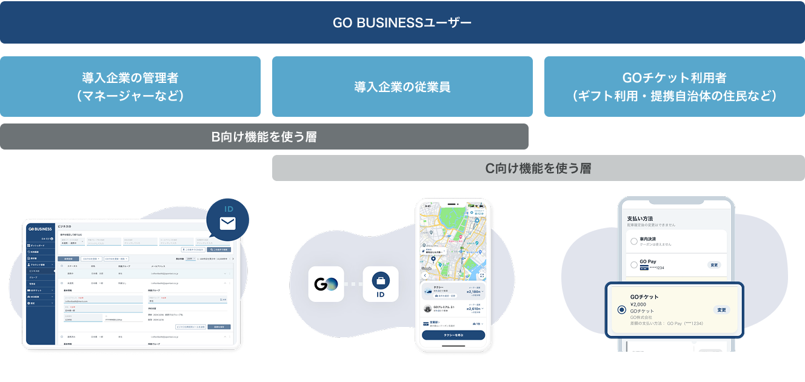

概要
GO BUSINESSは会社のタクシー配車や予約、経費精算、領収書・利用管理を効率化・一元化するGOの法人向けWEBサービス。
GO BUSINESSのユーザーは導入企業の管理者・導入企業の従業員・GOチケット利用ユーザーに分類され、それぞれのユースケースに応じてデザインを作成する。

- デザインワークフロー
- ⒈PdMと協業しながら仕様/機能に適したUIを検討・提案する(作っているデザインは、利用するユーザーストーリーに馴染むものか)
- ⒉レビューや仕様変更の指摘を受けて着地点をPdMと擦り合わせる
- ⒊エンジニアと連携後、場合によっては開発環境に合わせて仕様を調整する
案件でのアウトプット
- 【GO BUSINESS 管理画面】
- 導入企業の管理者が従業員のタクシー利用を確認、請求書を発行する
- 【Web配車】
- 導入企業の従業員が他の従業員（会社の役員など）のタクシー配車の実施・管理を行う
- 【GOチケット/ギフティングや導入企業で利用できる支払い方法】
- 従来の紙のタクシーチケットに代わる支払い手段。チケットの発行はWEBの管理画面から行い、スマートフォンアプリと連携して利用する。WEB/アプリ側のUIを作成
- https://go-tickets.jp/

- 【GOチケットセット/複数枚のGOチケットを配布する機能、提携自治体で提供】
- 2025年2月現在、広陵町の妊婦の方に複数枚のタクシーチケットを配布する。導入する町村が使用するチケットの発行・管理を行うフロント画面のデザインを作成
- 奈良県広陵町とGOで連携協定を締結
- GOチケット利用者マニュアル
あるべき姿の整理/カスタマーサクセスとのワークショップ
- GO BUSINESS内でのペルソナ定義・課題の可視化の実施がなかったことを背景にBizとかペルソナ像・潜在する課題の整理、CSとは現状上がっている課題を整理するワークショップを開催。整理した課題はバックログに積む、ビジネスサイドに持ち帰ってもらう、対応をお願い。
- リリースを検討するかについては、bizを通したヒアリング・課題の優先度が上がった際に開発判断が行われる。